import pandas as pd
import numpy as np
import seaborn as sns
import matplotlib.pyplot as plt
from sklearn.model_selection import train_test_split
from sklearn.preprocessing import StandardScaleraba = pd.read_csv("C:/Users/Rakes/OneDrive/Desktop/stats/p1/abalone_dataset.csv")aba.head(5)| Sex | Length | Diameter | Height | Whole_weight | Shucked_weight | Viscera_weight | Shell_weight | Rings | |
|---|---|---|---|---|---|---|---|---|---|
| 0 | M | 0.455 | 0.365 | 0.095 | 0.5140 | 0.2245 | 0.1010 | 0.150 | 15 |
| 1 | M | 0.350 | 0.265 | 0.090 | 0.2255 | 0.0995 | 0.0485 | 0.070 | 7 |
| 2 | F | 0.530 | 0.420 | 0.135 | 0.6770 | 0.2565 | 0.1415 | 0.210 | 9 |
| 3 | M | 0.440 | 0.365 | 0.125 | 0.5160 | 0.2155 | 0.1140 | 0.155 | 10 |
| 4 | I | 0.330 | 0.255 | 0.080 | 0.2050 | 0.0895 | 0.0395 | 0.055 | 7 |
aba.isnull().sum()Sex 0
Length 0
Diameter 0
Height 0
Whole_weight 0
Shucked_weight 0
Viscera_weight 0
Shell_weight 0
Rings 0
dtype: int64aba.shape(4177, 9)aba.info<bound method DataFrame.info of Sex Length Diameter Height Whole_weight Shucked_weight \
0 M 0.455 0.365 0.095 0.5140 0.2245
1 M 0.350 0.265 0.090 0.2255 0.0995
2 F 0.530 0.420 0.135 0.6770 0.2565
3 M 0.440 0.365 0.125 0.5160 0.2155
4 I 0.330 0.255 0.080 0.2050 0.0895
... .. ... ... ... ... ...
4172 F 0.565 0.450 0.165 0.8870 0.3700
4173 M 0.590 0.440 0.135 0.9660 0.4390
4174 M 0.600 0.475 0.205 1.1760 0.5255
4175 F 0.625 0.485 0.150 1.0945 0.5310
4176 M 0.710 0.555 0.195 1.9485 0.9455
Viscera_weight Shell_weight Rings
0 0.1010 0.1500 15
1 0.0485 0.0700 7
2 0.1415 0.2100 9
3 0.1140 0.1550 10
4 0.0395 0.0550 7
... ... ... ...
4172 0.2390 0.2490 11
4173 0.2145 0.2605 10
4174 0.2875 0.3080 9
4175 0.2610 0.2960 10
4176 0.3765 0.4950 12
[4177 rows x 9 columns]>aba.dtypesSex object
Length float64
Diameter float64
Height float64
Whole_weight float64
Shucked_weight float64
Viscera_weight float64
Shell_weight float64
Rings int64
dtype: objectplt.figure(figsize=(6,4))
sns.countplot(x=aba["Sex"])
plt.title("Distribution of Abalone Sex")
plt.xlabel("Sex")
plt.ylabel("Count")
plt.show()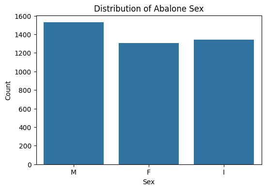
# Box plots
cols = ["Sex","Length", "Diameter", "Height", "Whole_weight", "Shucked_weight", "Viscera_weight", "Shell_weight", "Rings"]
plt.figure(figsize=(12,8))
for i, col in enumerate(cols, 1):
plt.subplot(3, 3, i)
sns.boxplot(y=aba[col])
plt.title(f"Boxplot of {col}")
plt.tight_layout()
plt.show()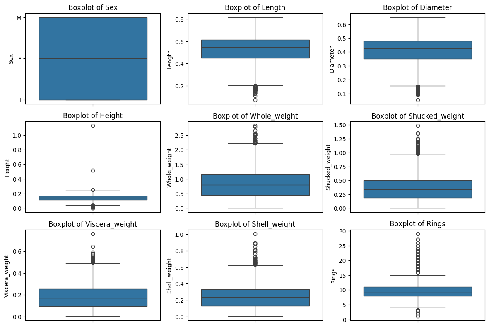
# Relationships between features
sns.pairplot(aba)
plt.show()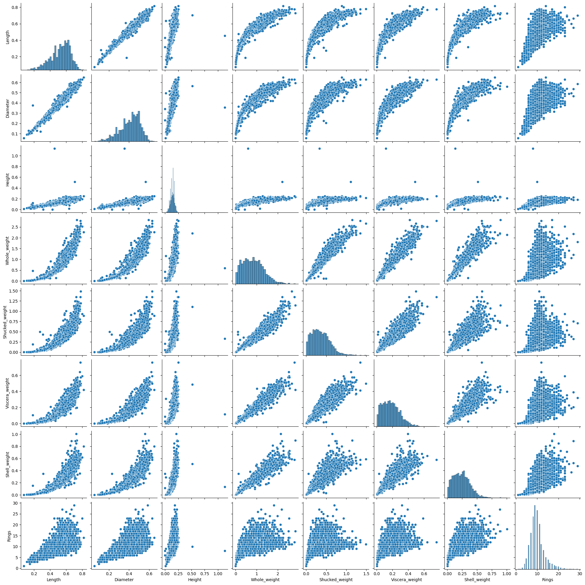
plt.figure(figsize=(6,4))
sns.histplot(aba["Height"], bins=30, kde=True)
plt.title("Distribution of Height")
plt.show()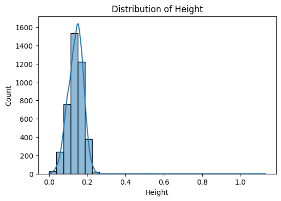
# Scatter plots to visualize growth
plt.figure(figsize=(12, 6))
plt.subplot(1, 2, 1)
sns.scatterplot(x=aba["Length"], y=aba["Rings"], hue=aba["Sex"].astype(str), alpha=0.5)
plt.title("Length vs. Rings")
plt.xlabel("Length")
plt.ylabel("Rings")Text(0, 0.5, 'Rings')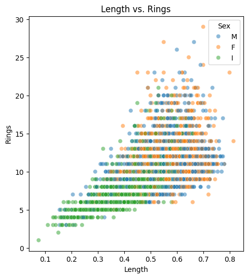
# Impute zero height values with mean height
aba.loc[aba["Height"] == 0, "Height"] = aba["Height"].mean()from scipy.stats.mstats import winsorize
# Winsorization: Cap extreme values at 5th and 95th percentile
for col in ["Length", "Diameter", "Height", "Whole_weight", "Shucked_weight", "Viscera_weight", "Shell_weight", "Rings"]:
aba[col] = winsorize(aba[col], limits=[0.05, 0.05])aba = pd.get_dummies(aba, columns=["Sex"])# Compute correlation matrix
corr_matrix = aba.corr()
# Plot correlation heatmap
plt.figure(figsize=(10,6))
sns.heatmap(corr_matrix, annot=True, cmap="coolwarm", fmt=".2f")
plt.title("Feature Correlation Heatmap")
plt.show()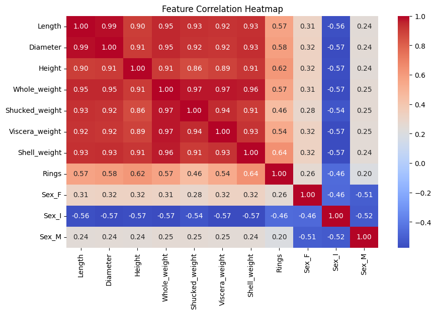
# Splitting data
X = aba.drop(columns=["Rings"])
y = aba["Rings"]
X_train, X_test, y_train, y_test = train_test_split(X, y, test_size=0.2, random_state=42)
# Standardizing numerical features
scaler = StandardScaler()
X_train_scaled = pd.DataFrame(scaler.fit_transform(X_train), columns=X.columns, index=X_train.index)
X_test_scaled = pd.DataFrame(scaler.transform(X_test), columns=X.columns, index=X_test.index)
import statsmodels.api as sm
# Add constant for OLS
X_train_ols = sm.add_constant(X_train_scaled)
X_test_ols = sm.add_constant(X_test_scaled)
# Fit OLS model
ols_model = sm.OLS(y_train, X_train_ols).fit()
print(ols_model.summary()) OLS Regression Results
==============================================================================
Dep. Variable: Rings R-squared: 0.554
Model: OLS Adj. R-squared: 0.553
Method: Least Squares F-statistic: 460.5
Date: Fri, 07 Mar 2025 Prob (F-statistic): 0.00
Time: 14:00:14 Log-Likelihood: -6730.3
No. Observations: 3341 AIC: 1.348e+04
Df Residuals: 3331 BIC: 1.354e+04
Df Model: 9
Covariance Type: nonrobust
==================================================================================
coef std err t P>|t| [0.025 0.975]
----------------------------------------------------------------------------------
const 9.8743 0.031 314.165 0.000 9.813 9.936
Length -0.1197 0.209 -0.574 0.566 -0.529 0.290
Diameter 0.9141 0.210 4.347 0.000 0.502 1.326
Height 0.7526 0.085 8.863 0.000 0.586 0.919
Whole_weight 3.7527 0.342 10.961 0.000 3.081 4.424
Shucked_weight -4.0647 0.179 -22.722 0.000 -4.415 -3.714
Viscera_weight -0.8375 0.138 -6.087 0.000 -1.107 -0.568
Shell_weight 0.9626 0.165 5.835 0.000 0.639 1.286
Sex_F 0.0906 0.023 3.899 0.000 0.045 0.136
Sex_I -0.2235 0.026 -8.542 0.000 -0.275 -0.172
Sex_M 0.1296 0.021 6.047 0.000 0.088 0.172
==============================================================================
Omnibus: 294.355 Durbin-Watson: 1.970
Prob(Omnibus): 0.000 Jarque-Bera (JB): 415.293
Skew: 0.706 Prob(JB): 6.61e-91
Kurtosis: 3.993 Cond. No. 2.45e+15
==============================================================================
Notes:
[1] Standard Errors assume that the covariance matrix of the errors is correctly specified.
[2] The smallest eigenvalue is 3.99e-27. This might indicate that there are
strong multicollinearity problems or that the design matrix is singular.from sklearn.metrics import mean_squared_error, mean_absolute_error, r2_score
# Prediction
y_pred = ols_model.predict(X_test_ols)
# Model evaluation metrics
mse = mean_squared_error(y_test, y_pred)
mae = mean_absolute_error(y_test, y_pred)
r2 = r2_score(y_test, y_pred)
print(f"\nModel Evaluation Metrics:")
print(f"Mean Squared Error (MSE): {mse:.4f}")
print(f"Mean Absolute Error (MAE): {mae:.4f}")
print(f"R-squared (R²): {r2:.4f}")
Model Evaluation Metrics:
Mean Squared Error (MSE): 3.3736
Mean Absolute Error (MAE): 1.4127
R-squared (R²): 0.5496# Scatter plot for OLS Model
plt.figure(figsize=(6, 6))
plt.scatter(y_test, y_pred, color='blue', alpha=0.5)
plt.plot([min(y_test), max(y_test)], [min(y_test), max(y_test)], linestyle='--', color='red', linewidth=2)
plt.xlabel("Actual Rings")
plt.ylabel("Predicted Rings")
plt.title("Actual vs. Predicted Rings (OLS Model)")
plt.text(min(y_test), max(y_pred) - 2, f"MSE: {mse:.4f}\nMAE: {mae:.4f}\nR²: {r2:.4f}", fontsize=10, verticalalignment='top')
plt.show()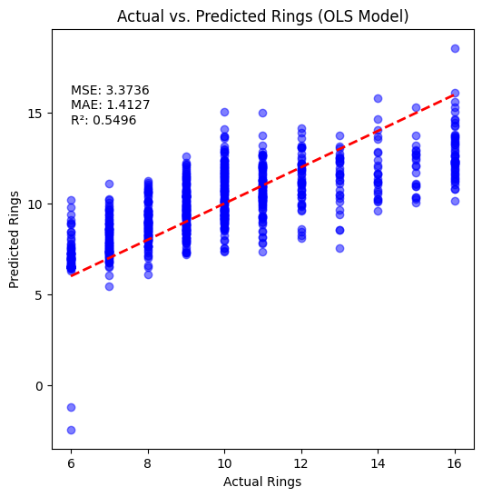
# Ridge Regression
from sklearn.linear_model import Ridge
ridge = Ridge(alpha=1.0)
ridge.fit(X_train, y_train)
y_ridge_pred = ridge.predict(X_test)
ridge_mse = mean_squared_error(y_test, y_ridge_pred)
ridge_mae = mean_absolute_error(y_test, y_ridge_pred)
ridge_r2 = r2_score(y_test, y_ridge_pred)
print(f"\nRidge Regression Evaluation Metrics:")
print(f"MSE: {ridge_mse:.4f}")
print(f"MAE: {ridge_mae:.4f}")
print(f"R²: {ridge_r2:.4f}")
Ridge Regression Evaluation Metrics:
MSE: 3.3697
MAE: 1.4200
R²: 0.5502# Coefficients Summary for Ridge Regression
ridge_coefficients = pd.Series(ridge.coef_, index=X.columns)
print("\nRidge Regression Coefficients:")
print(ridge_coefficients)
Ridge Regression Coefficients:
Length 2.134166
Diameter 5.892062
Height 9.001296
Whole_weight 6.008200
Shucked_weight -16.912315
Viscera_weight -4.183926
Shell_weight 10.411092
Sex_F 0.245876
Sex_I -0.530194
Sex_M 0.284318
dtype: float64# Scatter plot for Ridge Model
plt.figure(figsize=(6, 6))
plt.scatter(y_test, y_ridge_pred, color='blue', alpha=0.5)
plt.plot([min(y_test), max(y_test)], [min(y_test), max(y_test)], linestyle='--', color='red', linewidth=2)
plt.xlabel("Actual Rings")
plt.ylabel("Predicted Rings")
plt.title("Actual vs. Predicted Rings (Ridge Model)")
plt.text(min(y_test), max(y_ridge_pred) - 2, f"MSE: {ridge_mse:.4f}\nMAE: {ridge_mae:.4f}\nR²: {ridge_r2:.4f}", fontsize=10, verticalalignment='top')
plt.show()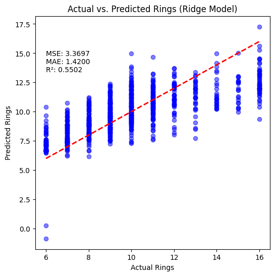
# Lasso Regression
from sklearn.linear_model import Lasso
lasso = Lasso(alpha=0.1)
lasso.fit(X_train, y_train)
y_lasso_pred = lasso.predict(X_test)
lasso_mse = mean_squared_error(y_test, y_lasso_pred)
lasso_mae = mean_absolute_error(y_test, y_lasso_pred)
lasso_r2 = r2_score(y_test, y_lasso_pred)
print(f"\nLasso Regression Evaluation Metrics:")
print(f"MSE: {lasso_mse:.4f}")
print(f"MAE: {lasso_mae:.4f}")
print(f"R²: {lasso_r2:.4f}")
# Coefficients Summary for Lasso Regression
lasso_coefficients = pd.Series(lasso.coef_, index=X.columns)
print("\nLasso Regression Coefficients:")
print(lasso_coefficients)
Lasso Regression Evaluation Metrics:
MSE: 4.8442
MAE: 1.7291
R²: 0.3533
Lasso Regression Coefficients:
Length 0.000000
Diameter 0.000000
Height 0.000000
Whole_weight 2.429523
Shucked_weight -0.000000
Viscera_weight 0.000000
Shell_weight 0.000000
Sex_F 0.000000
Sex_I -0.785001
Sex_M 0.000000
dtype: float64# Scatter plot for Lasso Model
plt.figure(figsize=(6, 6))
plt.scatter(y_test, y_lasso_pred, color='blue', alpha=0.5)
plt.plot([min(y_test), max(y_test)], [min(y_test), max(y_test)], linestyle='--', color='red', linewidth=2)
plt.xlabel("Actual Rings")
plt.ylabel("Predicted Rings")
plt.title("Actual vs. Predicted Rings (Lasso Model)")
plt.text(min(y_test) + 0.5, max(y_lasso_pred) + 1,
f"MSE: {lasso_mse:.4f}\nMAE: {lasso_mae:.4f}\nR²: {lasso_r2:.4f}",
fontsize=12, bbox=dict(facecolor='white', alpha=0.8))
plt.show()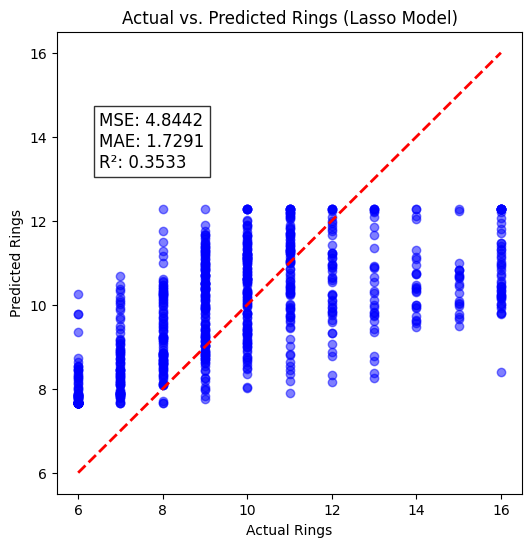
from sklearn.preprocessing import StandardScaler, PolynomialFeatures
from sklearn.pipeline import make_pipeline
from patsy import dmatrix
# Polynomial Regression
poly = PolynomialFeatures(degree=2, include_bias=False)
X_train_poly = poly.fit_transform(X_train_scaled)
X_test_poly = poly.transform(X_test_scaled)
poly_model = sm.OLS(y_train, sm.add_constant(X_train_poly)).fit()
print("\nPolynomial Regression Summary:")
print(poly_model.summary())
# Predictions
y_poly_pred = poly_model.predict(sm.add_constant(X_test_poly))
poly_mse = mean_squared_error(y_test, y_poly_pred)
poly_mae = mean_absolute_error(y_test, y_poly_pred)
poly_r2 = r2_score(y_test, y_poly_pred)
print(f"\nPolynomial Regression Evaluation Metrics:")
print(f"MSE: {poly_mse:.4f}")
print(f"MAE: {poly_mae:.4f}")
print(f"R²: {poly_r2:.4f}")
Polynomial Regression Summary:
OLS Regression Results
==============================================================================
Dep. Variable: Rings R-squared: 0.595
Model: OLS Adj. R-squared: 0.589
Method: Least Squares F-statistic: 94.80
Date: Fri, 07 Mar 2025 Prob (F-statistic): 0.00
Time: 14:00:15 Log-Likelihood: -6570.2
No. Observations: 3341 AIC: 1.324e+04
Df Residuals: 3289 BIC: 1.356e+04
Df Model: 51
Covariance Type: nonrobust
==============================================================================
coef std err t P>|t| [0.025 0.975]
------------------------------------------------------------------------------
const 2.2016 0.017 130.561 0.000 2.169 2.235
x1 -0.8063 0.227 -3.547 0.000 -1.252 -0.361
x2 0.3630 0.221 1.645 0.100 -0.070 0.796
x3 0.3648 0.096 3.796 0.000 0.176 0.553
x4 5.2842 0.514 10.290 0.000 4.277 6.291
x5 -4.6651 0.258 -18.089 0.000 -5.171 -4.159
x6 -0.5059 0.206 -2.450 0.014 -0.911 -0.101
x7 1.3842 0.220 6.295 0.000 0.953 1.815
x8 -0.1508 0.013 -11.292 0.000 -0.177 -0.125
x9 -0.0544 0.018 -3.095 0.002 -0.089 -0.020
x10 0.1980 0.014 14.041 0.000 0.170 0.226
x11 -0.1722 0.707 -0.244 0.808 -1.558 1.213
x12 -0.2377 1.095 -0.217 0.828 -2.385 1.910
x13 -0.1767 0.558 -0.317 0.752 -1.271 0.918
x14 4.7773 2.267 2.108 0.035 0.333 9.221
x15 -0.8998 1.150 -0.783 0.434 -3.154 1.354
x16 -2.9639 0.892 -3.323 0.001 -4.713 -1.215
x17 -0.8647 1.099 -0.787 0.431 -3.019 1.290
x18 0.1726 0.146 1.180 0.238 -0.114 0.459
x19 -0.4246 0.173 -2.450 0.014 -0.764 -0.085
x20 0.2458 0.140 1.751 0.080 -0.029 0.521
x21 -0.8939 0.569 -1.572 0.116 -2.009 0.221
x22 -0.2281 0.540 -0.422 0.673 -1.287 0.831
x23 -1.9052 2.110 -0.903 0.367 -6.043 2.233
x24 1.0809 1.097 0.985 0.325 -1.071 3.233
x25 1.7421 0.864 2.017 0.044 0.049 3.436
x26 1.2800 1.016 1.260 0.208 -0.711 3.271
x27 0.0947 0.148 0.639 0.523 -0.196 0.386
x28 0.0083 0.175 0.047 0.962 -0.334 0.350
x29 -0.0992 0.137 -0.723 0.469 -0.368 0.170
x30 0.4671 0.121 3.871 0.000 0.230 0.704
x31 1.5358 0.804 1.911 0.056 -0.040 3.111
x32 -1.0549 0.429 -2.460 0.014 -1.896 -0.214
x33 -0.4355 0.326 -1.336 0.182 -1.075 0.204
x34 -0.5845 0.362 -1.617 0.106 -1.293 0.124
x35 -0.0777 0.060 -1.295 0.196 -0.195 0.040
x36 0.1129 0.074 1.523 0.128 -0.032 0.258
x37 -0.0347 0.056 -0.620 0.535 -0.145 0.075
x38 -1.7600 0.997 -1.765 0.078 -3.715 0.195
x39 -2.5752 1.202 -2.143 0.032 -4.931 -0.219
x40 1.3901 0.885 1.571 0.116 -0.345 3.125
x41 -0.2140 0.962 -0.223 0.824 -2.100 1.672
x42 -0.1731 0.268 -0.645 0.519 -0.699 0.353
x43 0.6471 0.392 1.649 0.099 -0.122 1.416
x44 -0.4611 0.257 -1.797 0.072 -0.964 0.042
x45 2.0029 0.467 4.288 0.000 1.087 2.919
x46 0.1708 0.502 0.340 0.734 -0.814 1.155
x47 0.8347 0.619 1.349 0.178 -0.379 2.048
x48 -0.1964 0.137 -1.438 0.150 -0.464 0.071
x49 0.1796 0.197 0.911 0.363 -0.207 0.566
x50 0.0149 0.132 0.113 0.910 -0.243 0.273
x51 -0.0739 0.272 -0.272 0.786 -0.608 0.460
x52 -0.2264 0.505 -0.448 0.654 -1.217 0.764
x53 0.1532 0.104 1.474 0.141 -0.051 0.357
x54 -0.1080 0.156 -0.693 0.488 -0.414 0.198
x55 -0.0427 0.102 -0.418 0.676 -0.243 0.158
x56 -0.2462 0.293 -0.839 0.401 -0.821 0.329
x57 -0.1714 0.128 -1.339 0.181 -0.422 0.080
x58 -0.0696 0.175 -0.397 0.692 -0.414 0.274
x59 0.2325 0.117 1.982 0.048 0.002 0.463
x60 2.0798 0.018 117.067 0.000 2.045 2.115
x61 -0.8824 0.013 -70.215 0.000 -0.907 -0.858
x62 -1.1463 0.014 -83.750 0.000 -1.173 -1.119
x63 2.1601 0.023 92.571 0.000 2.114 2.206
x64 -1.2459 0.015 -84.626 0.000 -1.275 -1.217
x65 2.3122 0.019 124.315 0.000 2.276 2.349
==============================================================================
Omnibus: 230.353 Durbin-Watson: 1.964
Prob(Omnibus): 0.000 Jarque-Bera (JB): 331.696
Skew: 0.578 Prob(JB): 9.40e-73
Kurtosis: 4.024 Cond. No. 2.87e+16
==============================================================================
Notes:
[1] Standard Errors assume that the covariance matrix of the errors is correctly specified.
[2] The smallest eigenvalue is 2.43e-28. This might indicate that there are
strong multicollinearity problems or that the design matrix is singular.
Polynomial Regression Evaluation Metrics:
MSE: 3.1953
MAE: 1.3357
R²: 0.5734# Compute training predictions
y_poly_train_pred = poly_model.predict(sm.add_constant(X_train_poly))
# Training vs Test R2
train_r2_poly = r2_score(y_train, y_poly_train_pred)
test_r2_poly = r2_score(y_test, y_poly_pred)
# Training vs Test MSE
train_mse_poly = mean_squared_error(y_train, y_poly_train_pred)
test_mse_poly = mean_squared_error(y_test, y_poly_pred)
print(f"\nPolynomial Regression Overfitting Check:")
print(f"Training R2: {train_r2_poly:.4f}")
print(f"Test R2: {test_r2_poly:.4f}")
print(f"Training MSE: {train_mse_poly:.4f}")
print(f"Test MSE: {test_mse_poly:.4f}")
Polynomial Regression Overfitting Check:
Training R2: 0.5952
Test R2: 0.5734
Training MSE: 2.9898
Test MSE: 3.1953# Scatter plot for Polynomial Regression
plt.figure(figsize=(6, 6))
plt.scatter(y_test, y_poly_pred, color='blue', alpha=0.5)
plt.plot([min(y_test), max(y_test)], [min(y_test), max(y_test)], linestyle='--', color='red', linewidth=2)
plt.xlabel("Actual Rings")
plt.ylabel("Predicted Rings")
plt.title("Actual vs. Predicted Rings (Polynomial Model)")
plt.text(min(y_test), max(y_poly_pred) - 2,
f"MSE: {poly_mse:.4f}\nMAE: {poly_mae:.4f}\nR²: {poly_r2:.4f}",
fontsize=10, verticalalignment='top')
plt.show()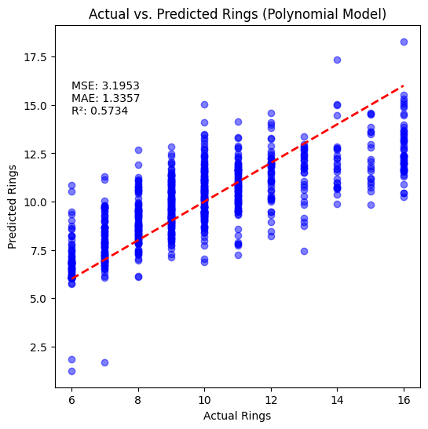
from sklearn.preprocessing import PolynomialFeatures
import statsmodels.api as sm
from sklearn.metrics import mean_squared_error, mean_absolute_error, r2_score
degrees = [1, 2, 3, 4, 5]
poly_results = {}
for degree in degrees:
print(f"\n Polynomial Degree: {degree}")
poly = PolynomialFeatures(degree=degree, include_bias=False)
X_train_poly = poly.fit_transform(X_train_scaled)
X_test_poly = poly.transform(X_test_scaled)
poly_model = sm.OLS(y_train, sm.add_constant(X_train_poly)).fit()
y_poly_pred = poly_model.predict(sm.add_constant(X_test_poly))
poly_mse = mean_squared_error(y_test, y_poly_pred)
poly_mae = mean_absolute_error(y_test, y_poly_pred)
poly_r2 = r2_score(y_test, y_poly_pred)
poly_results[degree] = {
"MSE": poly_mse,
"MAE": poly_mae,
"R2": poly_r2
}
print(f" Degree {degree} - MSE: {poly_mse:.4f}, MAE: {poly_mae:.4f}, R²: {poly_r2:.4f}")
Polynomial Degree: 1
Degree 1 - MSE: 3.3736, MAE: 1.4127, R²: 0.5496
Polynomial Degree: 2
Degree 2 - MSE: 3.1953, MAE: 1.3357, R²: 0.5734
Polynomial Degree: 3
Degree 3 - MSE: 6.8021, MAE: 1.4638, R²: 0.0919
Polynomial Degree: 4
Degree 4 - MSE: 175.1503, MAE: 2.5135, R²: -22.3822
Polynomial Degree: 5
Degree 5 - MSE: 3170.7095, MAE: 8.2069, R²: -422.2837# Plot MSE vs. Polynomial Degree
degrees = list(poly_results.keys())
mse_values = [metrics["MSE"] for metrics in poly_results.values()]
plt.figure(figsize=(6, 4))
plt.plot(degrees, mse_values, marker='o', linestyle='-', color='orange')
plt.xlabel("Polynomial Degree")
plt.ylabel("Mean Squared Error (MSE)")
plt.title("MSE vs. Polynomial Degree")
plt.yscale("log")
plt.grid(True, which="both", linestyle="--", linewidth=0.5)
plt.show()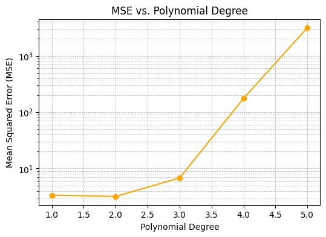